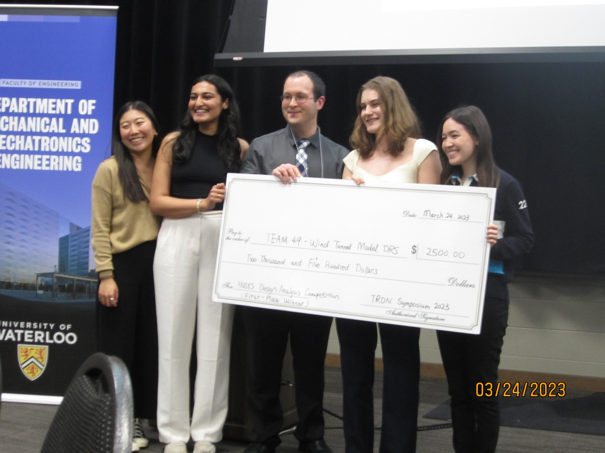
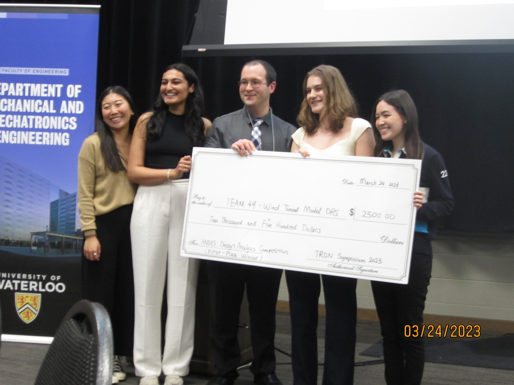

Drag Reduction System Automation
1st Place Winner of the University of Waterloo Design Analysis Competition Sponsored by Ansys
Project Overview
This capstone project was completed in collaboration with Williams Racing Formula 1 to design a system that automates movement between testing positions for the wind tunnel model's drag reduction system without affecting aerodynamic surfaces. We performed mathematical modeling of the airfoil surface using Python (NumPy, scikit-learn, and SciPy) and MATLAB to optimize system design parameters. Through careful analysis of system performance and validation of the design in adapted conditions, we overcame testing limitations and ensured reliable operation in real-world Formula 1 applications.
Project Poster
Resources
Images
 
